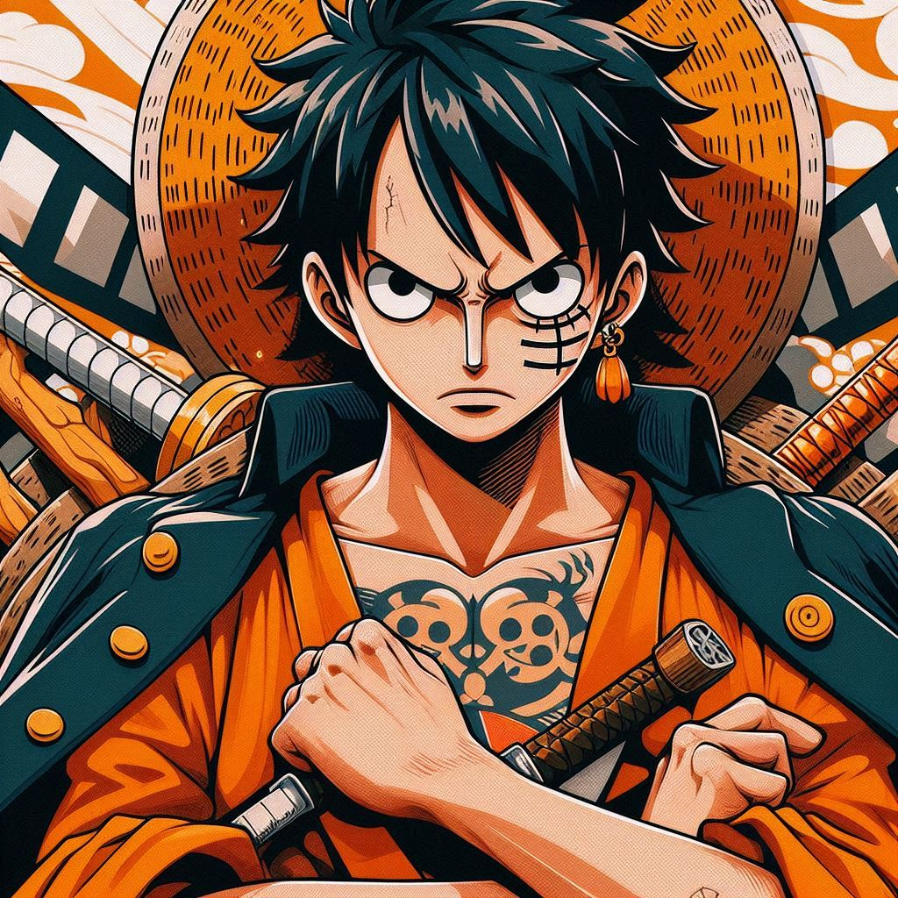
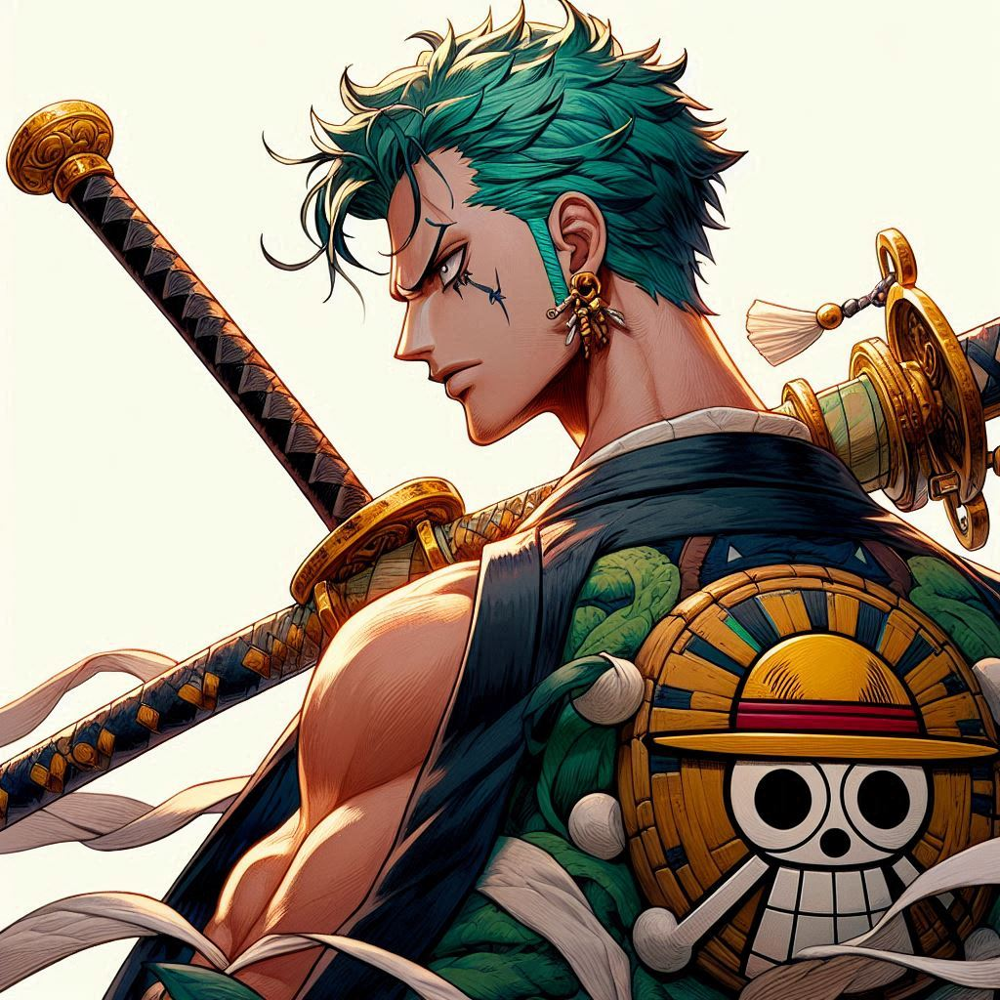
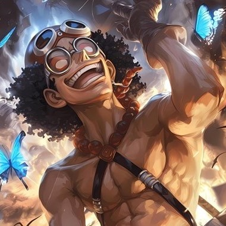
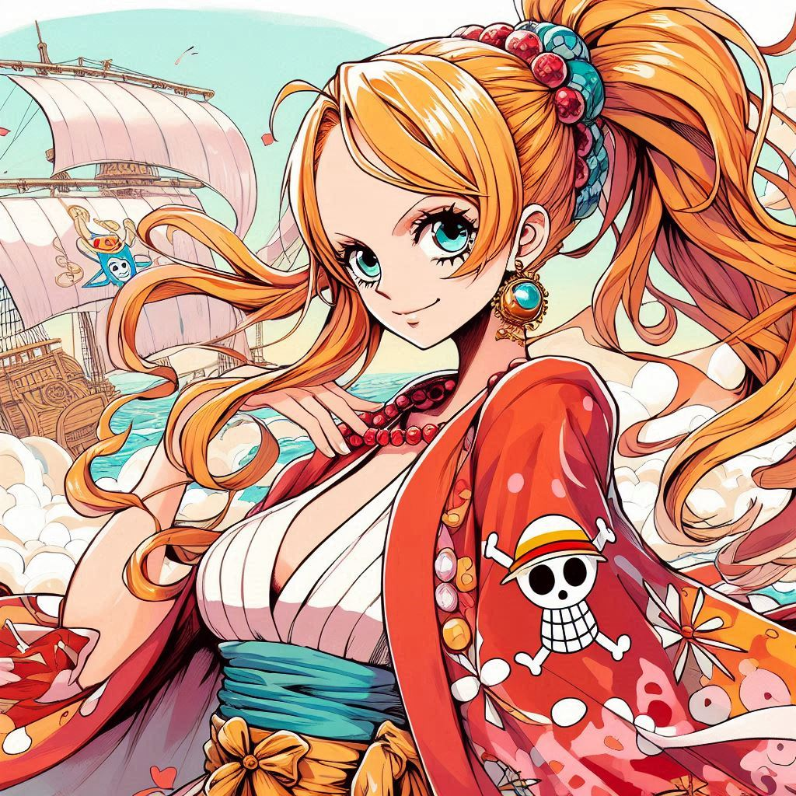
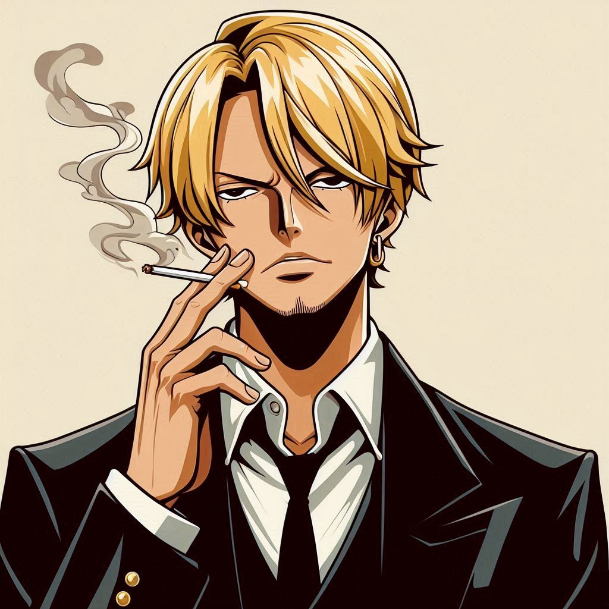
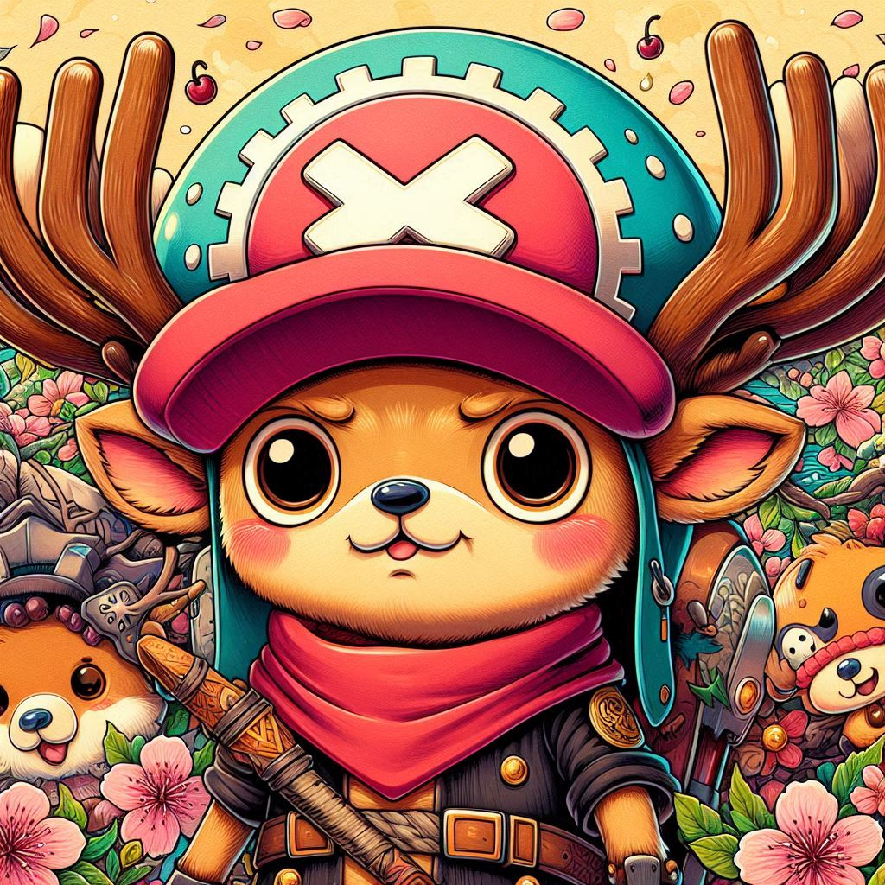
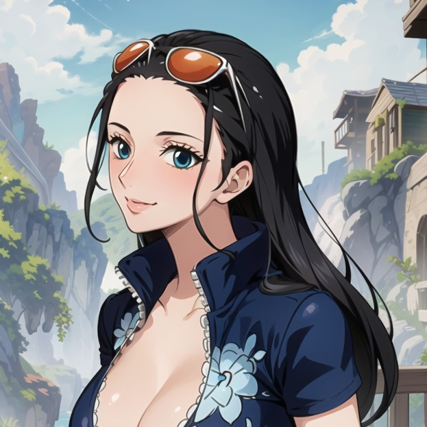

Monkey D. Luffy
Captain
Description
Luffy is the charismatic protagonist of One Piece. He's a pirate with the dream of becoming the Pirate King. With his iconic straw hat and energetic personality, Luffy is known for his ability to stretch his body like rubber, thanks to the Gomu Gomu no Mi fruit. He's determined, loyal to his friends, and always on the lookout for new adventures. 🏴☠️
Roronoa Zoro
Combatant
Description
Roronoa Zoro is the swordsman of the Straw Hat Pirates. Known for his dream of becoming the world's greatest swordsman, he wields three swords and uses the unique Three Sword Style (Santoryu). With his green hair, bandana, and scar over one eye, he's a fierce and loyal fighter. Zoro's dedication to his goal and his strength make him a standout character in One Piece. ⚔️
"God" Usopp
Sniper
Description
Usopp is the sharpshooter of the Straw Hat Pirates. Known for his clever inventions and exceptional marksmanship, Usopp dreams of becoming a brave warrior of the sea. He has a long nose, a unique appearance, and often tells tall tales. Despite his initial cowardice, Usopp shows great courage and loyalty to his friends. 🎯
Nami
Navigator
Description
Nami is the navigator of the Straw Hat Pirates. Known for her intelligence and skills in creating maps and navigation strategies, she has orange hair and a love for treasure. Nami uses a climate-controlling staff called the Clima-Tact to manipulate weather in battles. Her evolution from a thief to a loyal friend and crewmate is truly inspiring. 🌊
Sanji
Cook
Description
Sanji is the cook of the Straw Hat Pirates. Known for his extraordinary culinary skills and his kick-based fighting style, Sanji is a suave and chivalrous character. He has blonde hair, an iconic black suit, and is easily recognized by his ever-present cigarette. Sanji dreams of finding the All Blue, a legendary sea with fish from all over the world. His devotion to food and his respect for women make him a unique and beloved character. 🍽️
Chopper
Doctor
Description
Chopper is the doctor of the Straw Hat Pirates. A reindeer who ate the Human-Human Fruit, Chopper can transform into various forms, making him a versatile fighter and skilled medical professional. With his blue nose and pink hat, he's instantly recognizable. He's innocent, kind-hearted, and has a strong desire to help others. 🌿
Nico Robin
Archaeologist
Description
Nico Robin is the archaeologist of the Straw Hat Pirates. She has the ability to sprout extra limbs from any surface, thanks to the powers of the Hana Hana no Mi fruit. With her calm demeanor and vast knowledge of history, she aims to uncover the true history of the world. Robin's past is filled with tragedy, but she finds a new family and purpose with the Straw Hat crew. 📚